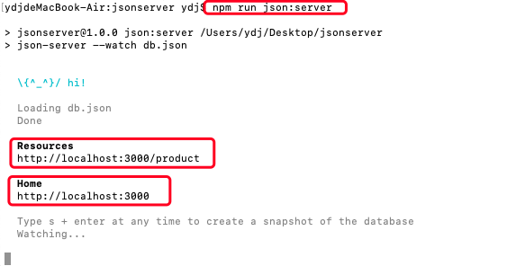

原文连接:https://www.cnblogs.com/tynam/p/11204238.html
JsonServer
主要的作用就是搭建本地的数据接口，创建json文件，便于调试调用
是一个 Node 模块，运行 Express 服务器，可以指定一个 json 文件作为 api 的数据源
官网：https://www.npmjs.com/package/json-server
安装全局的json-server
终端中输入：npm install -g json-server（windows系统）
mac系统：则为 sudo npm install -g json-server 如下图：

初始化package.json
终端中进入所要存放文件的目录
执行初始化命令：npm init
给文件包取一个名字，其他的默认 enter 就可以
jsonserver 保存到本地
执行命令：npm install json-server --save
执行后打开 package.json 文件
将 scripts 中内容进行修改：
“json：server” 将最为启动时json-server时使用
db.json将做为启动后作为服务器的数据进行使用
创建db.json 文件
在与package.json 同目录下创建db.json 文件，并以 对象 的格式进行填充数据
运行 json-server
终端中输入：npm run json:server

如上图：home 地址：http://localhost:3000
resources 地址，即创建的db.json中数据所在位置：http://localhost:3000/product
浏览器中运行 http://localhost:3000 后：
浏览器中运行 http://localhost:3000/product 后结果：
如下图，浏览器中每访问一次，终端则会输出对应的执行
postman 请求该接口
通过postman 请求该 API 发现数据确实来源于服务端